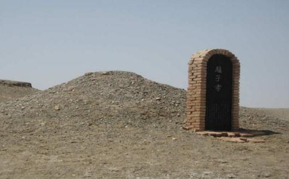

2004年5月，由歌手王嘉铭创作、以一对驴母子的故事为蓝本的音乐电视短片《驴子孝》制作成功，并在网上广为流传。同年底，该作品在第3届全国动画短片奖评选中，摘得了“最佳动画音乐电视片奖”的桂冠。
《驴子孝》靠什么打动众人？它的背后是一段怎样的故事？虽然已经过去了好几年，可每次一提起心中还是会隐隐地痛……
驴宝宝含泪求主人 距
今年已经年近七旬的于维明家住敦煌市郊七里镇，两儿一女长大后不在他的身边。他和老伴一辈子以放牧为生。1998年春节后，他与老伴一起搬到30公里开外的疏勒河古河道附近扎营放牧。经几年辛劳，他有了86只羊儿、32头驴子，还有一间遮风避雨的土屋和几大间驴羊圈。2001年4月9日中午，于维明看着羊儿和驴儿悠闲地晒太阳、啃青草，就找了一片阴凉坐下来，心满意足地打起了盹儿。
就在这时，一头名叫毛毛的幼驴气喘吁吁地来到了他的身边，它伸出可爱的小脑袋，直朝他身上拱。驴群里有3只欢快的驴宝宝，浑身如绸缎般光滑。它们刚出生3个月，是“同父异母”兄弟。于维明特别喜欢这3只驴宝宝，分别给它们起了好听的名字，最大的那只叫毛毛，它的妈妈叫桑桑。
于维明以为毛毛在同自己撒娇，就没有理会。毛毛急了，张口咬住他的衣角，使劲朝前拖。他
于维明丢下毛毛，快步走进了附近的驴群里，只见两只小驴正欢
桑桑去了哪里？于维明的心里打起了鼓。这时，毛毛嘶鸣起来，撒开四蹄，向前狂奔。因年龄尚小，它步伐不稳，一路踉踉跄跄的。
于维明追上前去，很快就到了1000米开外的那片红柳丛，看见了躺在地上的桑桑。多年的放牧经验告诉他：产后体虚的桑桑，误食了有毒的食物，一下子病倒了，并且病得不轻。
见桑桑躺在地上奄奄一息的样子，毛毛伤心极了，伸出两条前腿，突然跪在于维明的面前，用哀求的目光望着他。
于维明的眼睛湿润了。他一把扶起毛毛，说：“可怜的小家伙，我一定会尽力救治你的妈妈的。”说着他拿出随身携带的兽药，用手掰开了桑桑紧闭的嘴巴，把一粒粒兽药灌了进去。
喂完药后，于维明焦急地等待着桑桑醒来。毛毛先是围着桑桑转圈子，然后弯腰低头，舔着桑桑的面部，试图以自己的热吻来唤醒桑桑。
桑桑的泪水快要被舔干了，也没能站起来。驴是连睡觉都站着的动物，长时间躺倒不起，说明它的生命快要走到尽头了。毛毛从中嗅到了死亡的气息，于是舔干了妈妈的泪水后，它开始流起泪来。
桑桑与毛毛的心是相通的。为了安慰自己的宝宝，桑桑耗尽全身力气，试图站起来，却没有成功。毛毛知道了桑桑的意图，赶紧用头顶住桑桑的背，想帮助妈妈站起来。由于桑桑病得太厉害了，没办法从地上爬起来，只是用那充满爱意的目光在毛毛的身上扫来扫去。
黄昏时分，桑桑的病情仍没有一丝好转，四蹄不停地抽搐着，嘴里吐出大团大团的白沫。于维明意识到桑桑快要不行了，长叹一声后，就要转身离开，他还要赶着去照应别的驴儿和羊儿。
毛毛意识到于维明准备放弃它妈妈，就跑到他的前面，拦住他，不让他走。他明白了毛毛的意思，不忍心让它失望，就伸出双手试图抱起桑桑。可是，多次努力都失败了。
见毛毛不停地拱着桑桑，于维明的鼻子一酸，双手抱住毛毛说：“可怜的孩子啊，我理解你的心情。可是，没用了。”但毛毛仍旧不停地舔着、拱着桑桑。
夜幕降临时，桑桑终于闭上了眼睛。毛毛发疯似地舔着妈妈紧闭的双眼，期盼着能唤醒妈妈。见妈妈没有任何反应，它不时地发出低沉的哀鸣，眼泪“哗哗”地往下流。于维明见状不由得放声大哭。
于维明不能再呆下去了，一方面是因为不能过度伤心，另一方面是他必须要将羊儿、驴儿赶回去。于是，他抚摸着毛毛的小脑袋，轻拍它的脊背，安慰它说：“孩子啊，让妈妈安息吧！咱们得回去了。你才生下来3个月，经不住这个打击啊！”
毛毛耍起了倔犟脾气，始终不肯离开妈妈。于维明动手赶它，它伸出蹄子踢他。“母子情深啊”，他无奈地叹了口气，决定让毛毛留在这里陪妈妈一晚。他对毛毛说：“但愿能出现什么奇迹……”
痴心守候见证母子深情于维明赶着羊儿、驴儿，回到了家里。他对老伴说：“桑桑病得不轻，毛毛守在那里不肯回来……”老伴说：“驴子有着顽强的生命力，说不定一觉睡过来，桑桑就能够活过来呢。”
当天晚上，他躺在床上，想着桑桑和毛毛，几乎不曾合上眼睛。他最放心不下的是毛毛，毛毛还没有断奶啊，没了妈妈，怎么活下去呀？于是，他早早起床，熬了一锅喷香的
于维明让老伴去照看别的驴儿和羊儿，自己端着玉米粥，来到了毛毛的身旁。 不出他所料，桑桑仍僵硬地躺在地上，奇迹并没有出现。
此时的毛毛，一会儿舔舔妈妈的眼睛，一会儿舔舔妈妈的嘴巴，还不时地在妈妈身上拱来拱去。
太阳高高地升了起来。毛毛看见了于维明，昂起脖子，面向天空，吼出一声声悲凉的嘶鸣。
他放下那盆玉米粥后，蹲下身子，试了试桑桑的鼻息，抬起头来冲着毛毛说：“孩子，你的妈妈已经死了。你不要太难过了，赶紧吃点东西吧。”他端起玉米粥，送到毛毛的嘴边，毛毛没有一点食欲，低下头继续舔着妈妈。
于维明心疼极了，将玉米粥再次端到毛毛的嘴边，毛毛再次避让开了，围着桑桑转圈圈。于维明的心揪紧了，在多次喂食无果之后，他动手掰开毛毛的嘴，想把玉米粥强行灌下去。没想到，毛毛发起了驴脾气，猛地拱翻他手中的盆子，并扬起前蹄，向他“示威”。
于维明望着躺在地上的桑桑和被拱翻在地的玉米粥，对毛毛说：“你不吃不喝，能坚持多久呢？”
毛毛并没有理会于维明的话，继续伸出舌头在桑桑身上舔呀舔。它的舌头早已变得血肉模糊了，以至于桑桑的身上都沾上了血迹。
于维明看着看着，再也忍不住了，掩面痛哭起来。他放了40多年的牧，第一次见到如此感天动地的母子深情。他喃喃自语道：“毛毛太有情有义了，是个大孝子，桑桑是世界上最幸福的妈妈……”他对毛毛有了无限的敬意，发誓要保住毛毛的生命。
怎么才能把毛毛从它妈妈身边带走呢？看来只有让它远离桑桑死亡的地方，才能让它渐渐地忘却失母之痛。于维明想来想去，决定把平时常和毛毛玩耍的那两头小驴赶来。这三头小驴
两头小驴被赶来了，它们向毛毛做出各种亲热的动作，可毛毛却没有像平时那样热情地回应，而是一直躲着它们。不明真相的两头小驴不甘心被冷落，继续缠着毛毛。悲伤过度的毛毛竟然向两个小伙伴发起了脾气，张口就咬。两头小驴
于维明急得不知如何是好。随后，他又想出了一个点子：也许把羊群、驴群都赶来，就能让毛毛感受到大
又一天过去了，夜幕笼罩着荒凉的大漠。毛毛整整两天两夜没有吃饭、喝水、睡觉了，如果它再这样，后果很难预料啊。于维明横下心来，决定说什么也要把毛毛赶回去。
他跑回去喊来老伴，两人一起抱起毛毛，吃力地将它往回去的方向抬。毛毛发出了令人心颤的嘶鸣，使出全身的力气，把他俩踢倒在地。当他和老伴爬起来，再次去抱毛毛时，它瞪着一双可怕的眼睛，摆出了“谁要让我走，我就跟谁拼命”的架势。
于维明无奈地摇了摇头，对老伴说：“随它去吧。我活了这么一大把年纪，从未见过如此重情重义的小驴啊。”
七天七夜演绎驴子孝毛毛就这样没日没夜地守着妈妈，舔着妈妈，等着妈妈醒来。于维明变着花样给毛毛弄来了好吃的，它就是不肯吃上一口。他想给毛毛灌点甘甜的泉水，觉得这样或许能让毛毛多坚持几天。虽然毛毛的舌头早已干裂炸开，但对送到嘴边的泉水一点儿不感兴趣。它的目光始终落在妈妈的身上。
毛毛的身体越来越虚弱，于维明心急如焚。他决定拖走桑桑的尸体，让毛毛忘记妈妈，从丧母之痛中走出来。没想到，只要他一挨近桑桑，毛毛就会冲上来，赶他走，还朝他乱吼乱叫。
第三天过去了，于维明还是无法将毛毛赶回去。到了第四天，毛毛的身体虚弱得厉害，连骨头都凸现出来了，眼神失去了往日里的光亮。但它仍然围着桑桑转啊、舔啊、拱啊，有时还发出低低的嘶鸣。
到了第五天，毛毛的身子摇摇晃晃起来，舔、拱的动作也变得迟缓了。但它还是没有放弃最后的努力，累了就站起来休息一会儿，攒了点力气后，再次扑进妈妈的怀里。于维明每天都要给毛毛送来泉水、玉米粥、冲好的奶粉等，可毛毛对这些美味始终无动于衷。他一次次老泪纵横。
第六天，毛毛快迈不动步了。它站在妈妈的尸体旁，不时地低下头，伸出舌头，无力地轻舔几下。
第七天，于维明觉察到毛毛快要走到了生命的尽头，反复动员它吃点、喝点，不要追随妈妈远去。可毛毛还是不肯吃东西，它艰难地挪到妈妈的脑袋处，最后一次伸出干裂的舌头舔了舔妈妈的眼睛。随后，它一头栽倒在妈妈的身上，咽下了最后一口气，永远地闭上了眼睛……
见毛毛真的随桑桑去了，于维明无法控制住自己，坐在地上号啕大哭起来。整整7天7夜啊！毛毛就这样不吃不喝，为了唤醒和陪伴妈妈，耗尽了生命中的最后一滴血，这份旷世亲情怎能不让人感动呢？于维明挣扎着站了起来，在桑桑和毛毛的尸体前守候了好久，在心里祈祷着：“愿你们母子俩在天堂里重新享受天伦之乐吧！”第八天，这位放了一辈子牧的老人含着热泪就地掩埋了桑桑和毛毛的尸体。
随后不久，著名探险家、诗人乐荣华徒步探险至玉门关，听当地人说到了这对驴母子的故事。当时，他还不太相信。因为在人们的固有的观念中，驴是智商很低、脾气很坏的动物，哪有什么
在打听到更多关于毛毛在妈妈的呵护下成长的感人故事后，乐荣华的心灵深处产生了前所未有的震撼。他觉得，毛毛与桑桑之间的这份别样亲情可以给好多人作镜子。他考虑着要为这对驴母子做点什么。在于维明的帮助下，他掏出身上所有的钱，专门去敦煌找到一家石碑店，订做了一块黑色大理石石碑。他借来了铁凿、铁锤等工具，亲
做好这一切后，他买来了砌碑用的砖头、水泥和上等棺木等，雇人拉到玉门关外驴母子的死亡之地，郑重地将驴母子正式安葬，并立起了墓碑。碑立好后，他和于维明在驴母子的坟头洒了一瓶白酒，肃立默哀、致敬……
古人云：“百行孝为先”，驴子尚且如此。在亲情和孝心频频被物欲和私利侵蚀的今天，但愿“驴子孝”的故事能给人以触动。